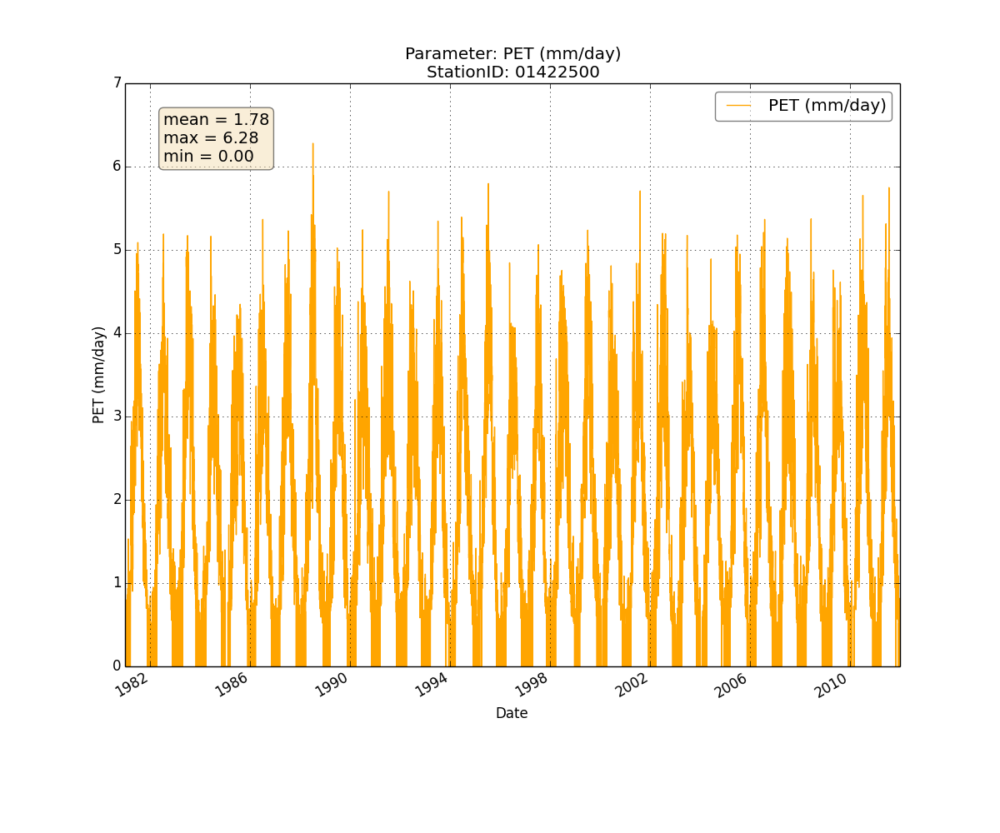
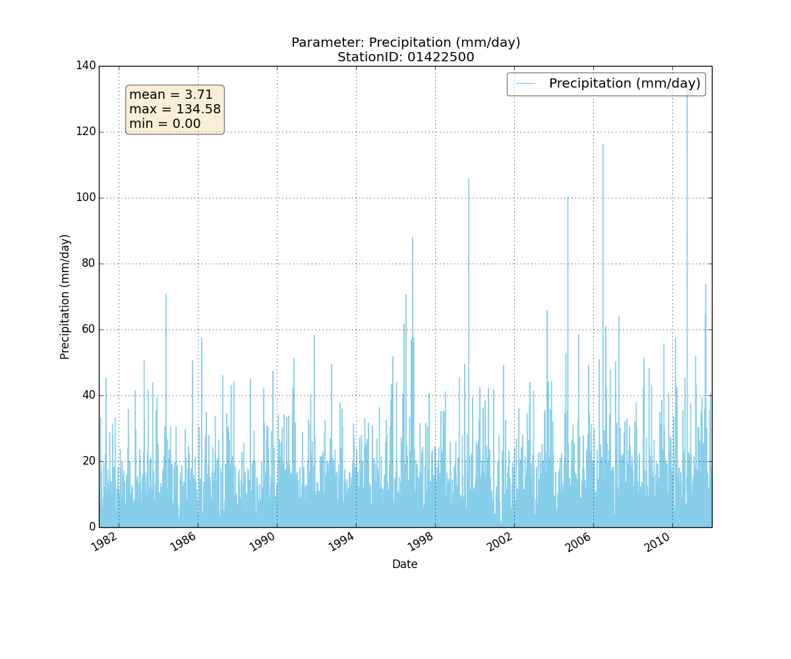

Gallery
Discharge from WATER.txt

Water use from WATER.txt

Storage deficit from WATER.txt
Subsurface flow from WATER.txt

AET from WATER.txt

PET from WATER.txt

Precipitation from WATER.txt

Snowpack from WATER.txt

Average Soil Root Zones from WATER.txt
Temperature from WATERSimulation.xml

TWI from WATERSimulation.xml

Comparison of discharge between 2 WATER.txt files
Comparison of storage deficit between 2 WATER.txt files

Comparison of temperature between 2 WATERSimulation.xml files
Sample Global Climate Model deltas

Map of sample Global Climate Model tiles
Map of sample Global Climate Model tiles with sample basins - shows basin and tile intersections
Map of sample water use points (centroids) with sample basins - shows basin and centroid intersections; NOTE: The map shows synthetic water use points and DO NOT show true location of actual water use locations